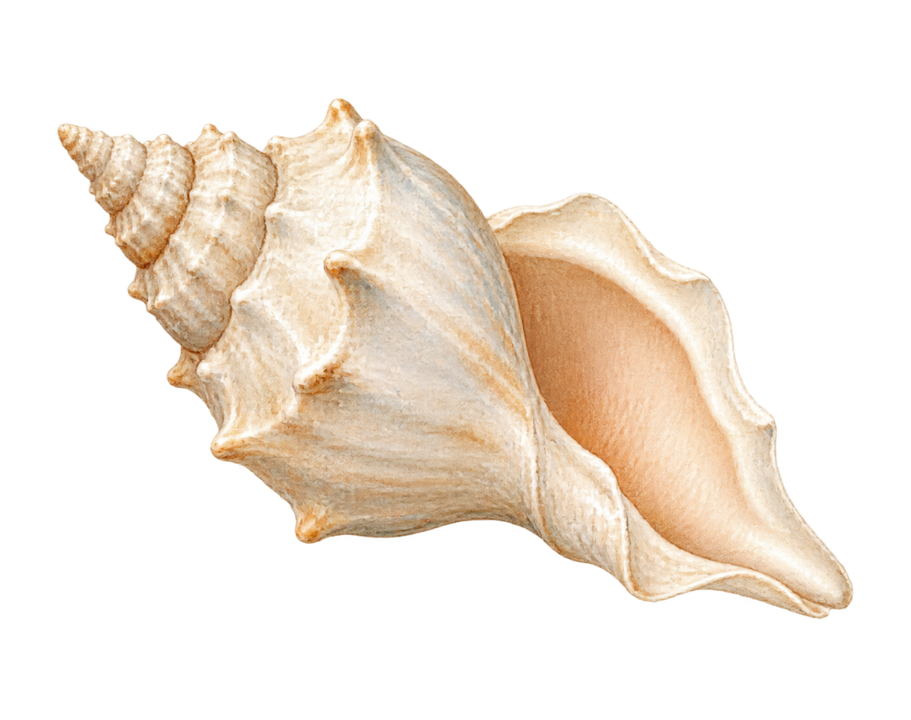
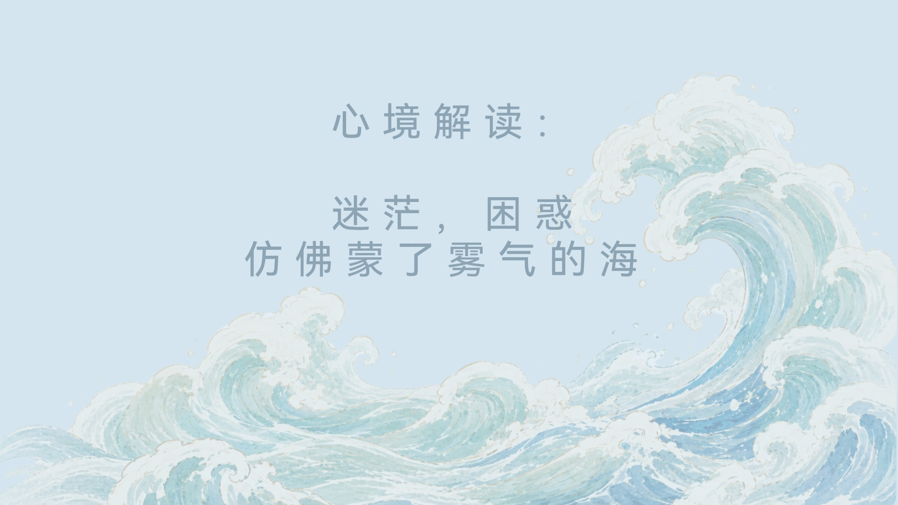
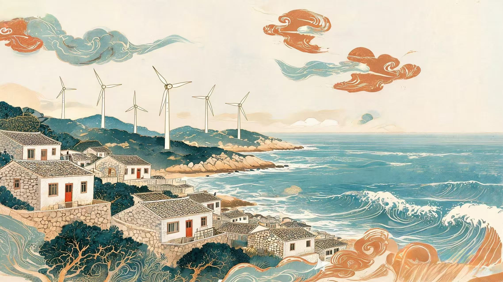
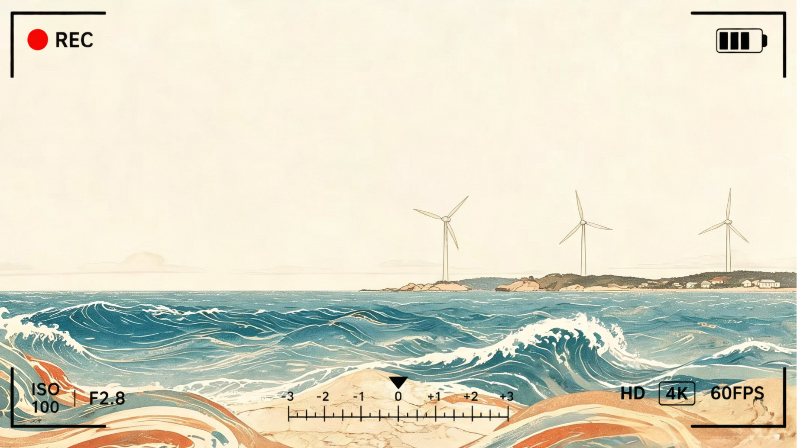

解锁纪念物：听音海螺——轻触海螺，能听到平潭海边的海浪


平潭岛是福建第一大岛，坐拥“陆海兼备”的地理禀赋，既为先民提供了贝类、鱼类等丰饶的海洋食物资源，也留出了可供耕作的滩涂台地，使这片土地在数千年间持续吸引人群定居、繁衍、创造文化。
正是这样一片丰沃的土地，孕育出了中国东南沿海最早、最完整的史前海洋文化序列，截至目前，平潭岛及周边区域已确认37处与南岛语族密切相关的史前遗址，时间跨度由旧石器时代延续至商周时期。平潭，成为南岛语族早期人群形成与向海扩散的“始发地”。

